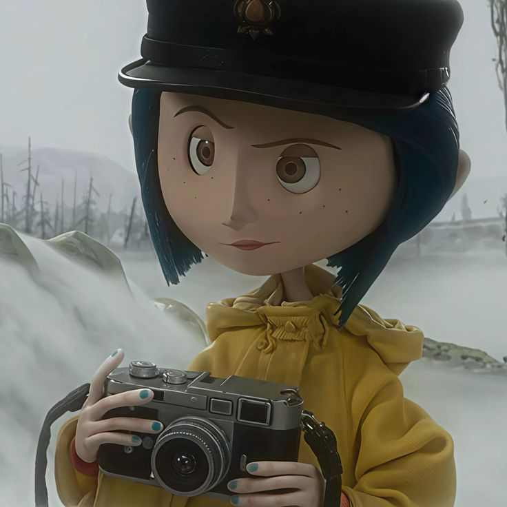
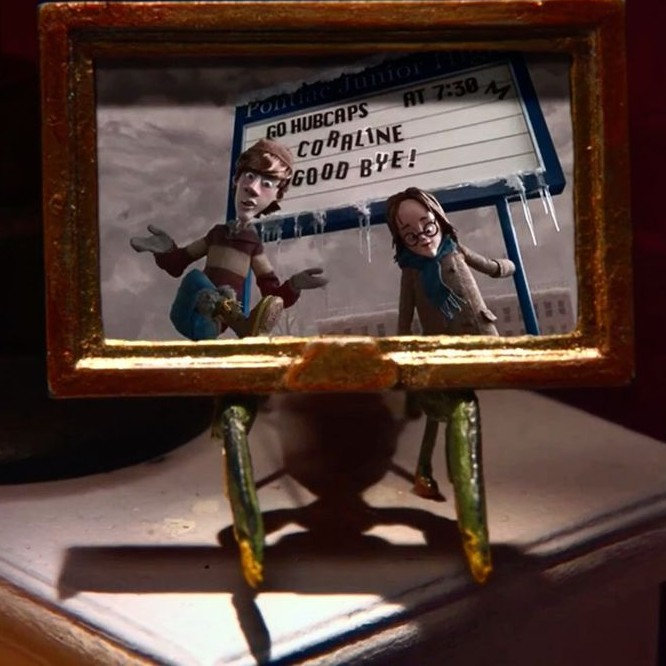
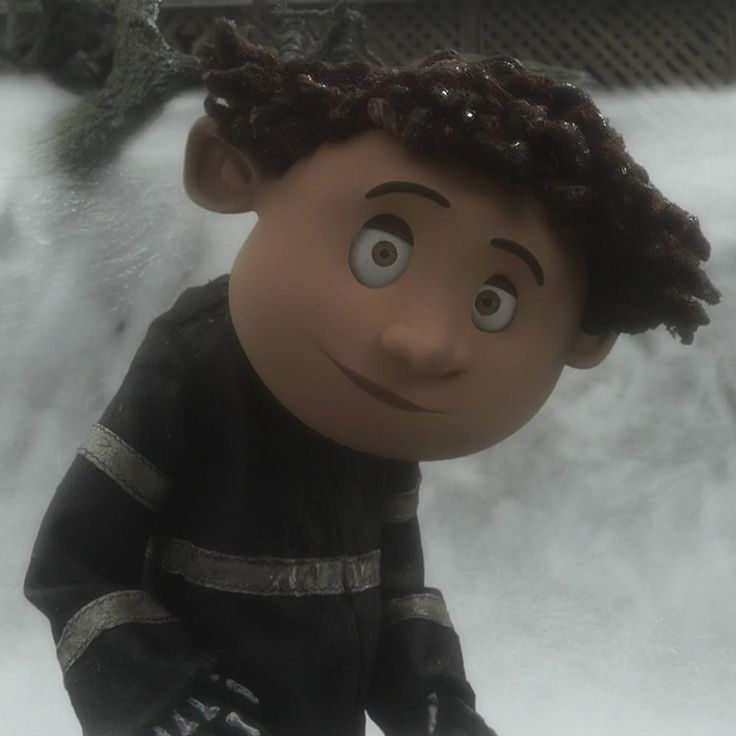
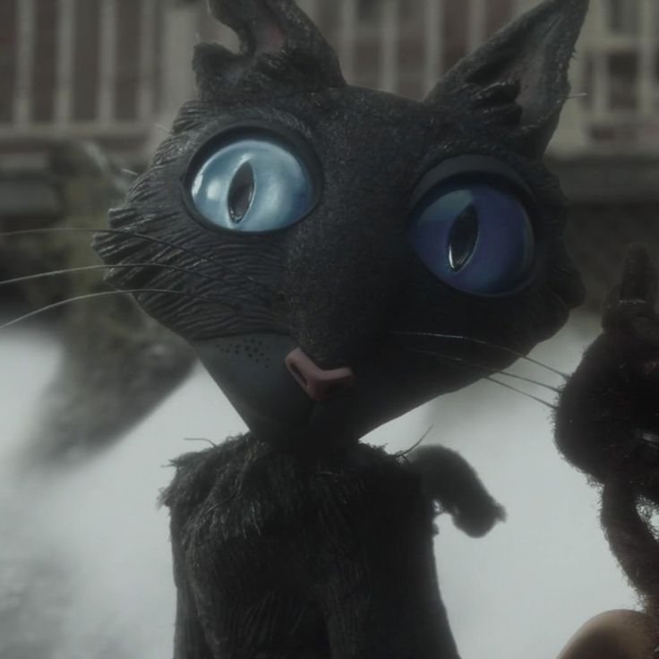
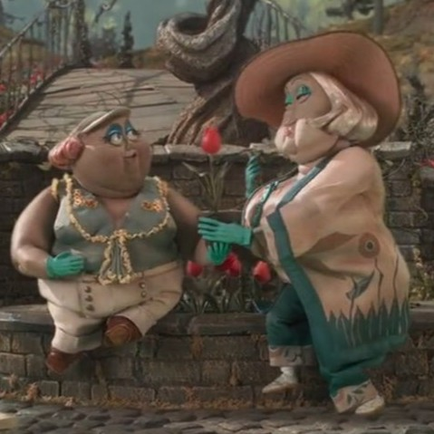
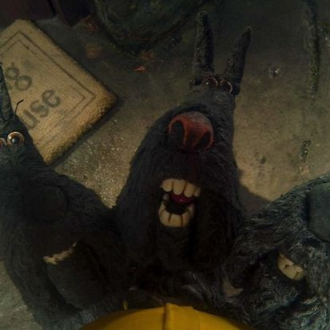
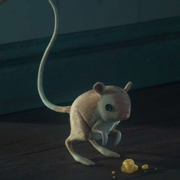
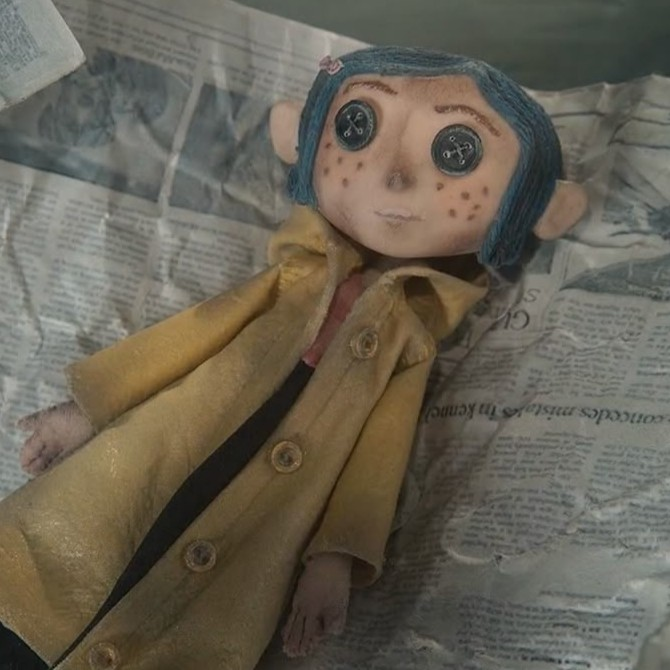

A história começa com a mudança da família Jones para o Palácio Cor de Rosa, uma antiga e peculiar residência dividida em apartamentos. Coraline, uma menina curiosa e cheia de energia, logo se vê frustrada e solitária em sua nova casa. A relação com seus pais está desgastada; ambos são escritores que trabalham incessantemente e, estressados com prazos, acabam negligenciando a filha, fazendo com que ela se sinta deixada de lado e invisível. Buscando distração, Coraline explora os arredores e conhece seus excêntricos vizinhos: as atrizes aposentadas Srta. Spink e Srta. Forcible, o Sr. Bobinsky com seu circo de camundongos, e Wybie, um garoto local que fala pelos cotovelos. O tédio de Coraline, porém, é interrompido quando ela descobre uma pequena e misteriosa porta selada atrás do papel de parede da sala de estar.
A chegada
Os vizinhos e família

Coraline Jones
A exploradora corajosa que adora chuva e jardinagem.

Os Pais
Mei e Charlie. Odeiam lama e vivem no computador.

Amigos de Michigan
A vida antiga de Coraline. Ela sente muita falta deles.

Wybie Lovat
O neto da dona da casa. Fala muito e caça lesmas.

Sra. Lovat
Avó de Wybie. Tem pavor do Palácio Cor de Rosa.

O Gato
Sarcastico e misterioso. Consegue falar no outro mundo.

Spink e Forcible
Atrizes aposentadas. Leem o futuro em folhas de chá.

Angus e os Scotties
Cachorros das vizinhas. Alguns estão vivos, outros empalhados.

Sr. Bobinsky
O excêntrico russo com um circo de camundongos saltadores.

Os Camundongos
Sr. Bobinsky jura que falam. Coraline acha que não.

A Boneca
Encontrada no baú da vovó. Parece demais com Coraline...
Problemas reais
A vida no Palácio Cor de Rosa não é o sonho que Coraline esperava. A casa é velha e cheia de goteiras, o que ela até não ligaria, se pudesse sair para explorar.
- Sem diversão: Seus pais odeiam lama e a proíbem de sair na chuva.
- Negligência: Eles estão obcecados com o catálogo de jardinagem.
- Comida Ruim: O pai cozinha "gororobas" exóticas que ela detesta..
Ela se sente invisível, deixada de lado, apenas um estorvo na rotina adulta dos pais. É esse vazio e o tédio de estar presa dentro de casa que abre espaço para a curiosidade...

"Cuidado com o que você deseja"
Durante a noite, a pequena porta que parecia emparedada se abre misteriosamente. O que era tijolo se torna um túnel convidativo de cores vibrantes.
Coraline sente o cheiro de comida boa vindo do outro lado. Parece perfeito, mas você tem coragem de descobrir o que tem lá?